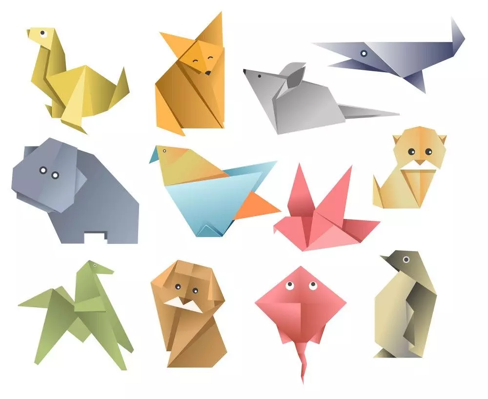

أساسيات فن طي الورق

فن ياباني يعتمد على طي الورق لصنع مجسمات ثلاثية الأبعاد باستخدام تقنيات طي دقيقة ودون قص أو لصق
الأدوات
- ورق مربع (خفيف الوزن)
- مسطرة
- مقص
مميزات
- سهولة الأدوات
- يقوي عضلات اليد الصغيرة ويحسن التناسق بين العين واليد
- يُعد نشاطًا تأمليًا يبعث على الهدوء النفسي ويخفف الضغوط
المقدمة
|
رقم الكورس
|
هدف الكورس
|
رابط الكورس |
|
الثاني
|
عمل طائر الكركي
|
|
|
الثالث
|
عمل شكل القلب
|
|
|
الرابع
|
عمل طائر الأوريجامي
|
|